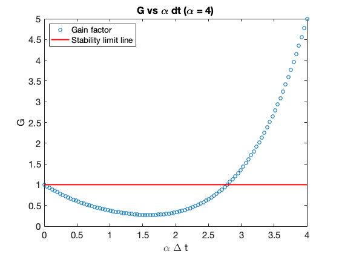
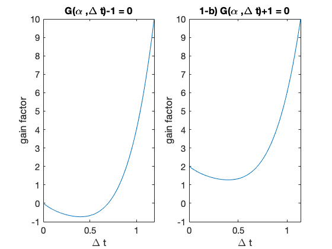
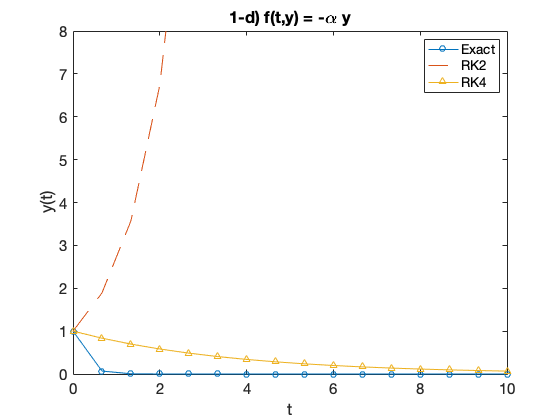
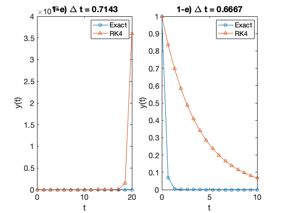
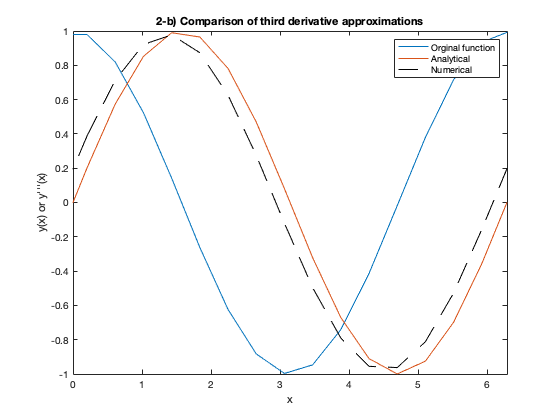
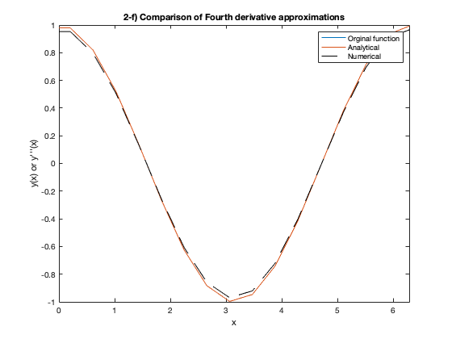
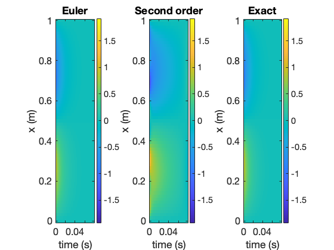

Contents
Introduction
clc
clearvars
close all
Problem 1
n = 100;
dt = linspace(0,1,n);
alpha = 4;
G=zeros(1,n);
for i=1:n
G(i) = 1-(dt(i)*alpha)+(0.5*(dt(i)*alpha)^2)-...
((1/6)*(dt(i)*alpha)^3)+((1/24)*(dt(i)*alpha)^4);
end
figure(1);
alphadt=alpha.*dt;
plot(alphadt,G,'o');
set(gca,'FontSize',15);
ylabel('G');
xlabel('\alpha \Delta t');
hold on
plot(0:0.04:4,ones(101),'r','LineWidth',2);
legend('Gain factor','Stability limit line','Location','NorthWest');
title('G vs \alpha dt (\alpha = 4)')
x=linspace(0,20,1000);
maxit =100;
tol=1e-3;
verbose =false;
g = @objfun1;
gprime = @objgradfun1;
ygrid=g(x);
g2 = @objfun2;
ygrid2 = ygrid+2;
for j=1:2
x0=(j-1);
[R(j),it,success]=newton_exact(g,gprime,x0,maxit,tol,verbose);
end
disp(['Real Roots: ', num2str(R)]);
figure(2)
subplot(1,2,1)
plot(x,ygrid)
set(gca,'FontSize',15);
ylim([-1,10]);
xlabel('\Delta t');
ylabel('gain factor');
title('G(\alpha ,\Delta t)-1 = 0')
subplot(1,2,2)
plot(x,ygrid2)
set(gca,'FontSize',15);
ylim([-1,10]);
title('1-b) G(\alpha ,\Delta t)+1 = 0')
xlabel('\Delta t');
ylabel('gain factor');
N=16;
tmin=0;
tmax=10;
t=linspace(tmin,tmax,N);
dt=t(2)-t(1);
y0=1;
ybar=y0*exp(-alpha*t);
yRK2=zeros(1,N);
yRK2(1)=y0;
for n=2:N
yhalf=yRK2(n-1)+dt/2*(-alpha*yRK2(n-1));
yRK2(n)=yRK2(n-1)+dt*(-alpha*yhalf);
end
yRK4=zeros(1,N);
yRK4(1)=y0;
for n=2:N
dy1=dt*fRK(t(n-1),yRK4(n-1),alpha);
dy2=dt*fRK(t(n-1)+dt/2,yRK4(n-1)+dy1/2,alpha);
dy3=dt*fRK(t(n-1)+dt/2,yRK4(n-1)+dy2/2,alpha);
dy4=dt*fRK(t(n-1)+dt,yRK4(n-1)+dy3,alpha);
yRK4(n)=yRK4(n-1)+1/6*(dy1+2*dy2+2*dy3+dy4);
end
figure(3);
clf;
plot(t,ybar,'o-');
xlabel('t');
ylabel('y(t)');
set(gca,'FontSize',15);
hold on;
plot(t,yRK2,'--')
plot(t,yRK4,'^-')
ylim([0,8]);
legend('Exact','RK2','RK4')
title('1-d) f(t,y) = -\alpha y');
N=15;
t=linspace(tmin,20,N);
dt=t(2)-t(1);
ybar=y0*exp(-alpha*t);
yRK4=zeros(1,N);
yRK4(1)=y0;
for n=2:N
dy1=dt*fRK(t(n-1),yRK4(n-1),alpha);
dy2=dt*fRK(t(n-1)+dt/2,yRK4(n-1)+dy1/2,alpha);
dy3=dt*fRK(t(n-1)+dt/2,yRK4(n-1)+dy2/2,alpha);
dy4=dt*fRK(t(n-1)+dt,yRK4(n-1)+dy3,alpha);
yRK4(n)=yRK4(n-1)+1/6*(dy1+2*dy2+2*dy3+dy4);
end
figure(4);
subplot(1,2,1);
plot(t,ybar,'o-');
xlabel('t');
ylabel('y(t)');
set(gca,'FontSize',15);
hold on
plot(t,yRK4,'^-')
legend('Exact','RK4')
title('1-e) \Delta t = 0.7143');
N=16;
t=linspace(tmin,tmax,N);
dt=t(2)-t(1);
ybar=y0*exp(-alpha*t);
yRK4=zeros(1,N);
yRK4(1)=y0;
for n=2:N
dy1=dt*fRK(t(n-1),yRK4(n-1),alpha);
dy2=dt*fRK(t(n-1)+dt/2,yRK4(n-1)+dy1/2,alpha);
dy3=dt*fRK(t(n-1)+dt/2,yRK4(n-1)+dy2/2,alpha);
dy4=dt*fRK(t(n-1)+dt,yRK4(n-1)+dy3,alpha);
yRK4(n)=yRK4(n-1)+1/6*(dy1+2*dy2+2*dy3+dy4);
end
figure(4);
subplot(1,2,2);
plot(t,ybar,'o-');
xlabel('t');
ylabel('y(t)');
set(gca,'FontSize',15);
hold on
plot(t,yRK4,'^-')
legend('Exact','RK4')
title('1-e) \Delta t = 0.6667');
Real Roots: 0 0.69646
   
Problem 2
clc
clearvars
close all
lx=50;
x=linspace(-10,10,lx)';
y=cos(x);
ytripleprime=sin(x);
figure();
plot(x,y);
hold on;
plot(x,ytripleprime);
dy3_dx=zeros(lx,1);
dx=x(2)-x(1);
den=dx^3;
dy3_dx(1)=(y(4)-3*y(3)+3*y(2)-y(1))/den;
for ix=2:lx-2
dy3_dx(ix)=(y(ix+2)-3*y(ix+1)+3*y(ix)-y(ix-1))/den;
end
dy3_dx(lx-1)=(y(lx-1)-3*y(lx-2)+3*y(lx-3)-y(lx-4))/den;
dy3_dx(lx)=(y(lx)-3*y(lx-1)+3*y(lx-2)-y(lx-3))/den;
x=linspace(-10,10,lx)';
plot(x,dy3_dx,'k--')
legend('Orginal function', 'Analytical', 'Numerical');
xlabel('x');
ylabel('y(x) or y''''''(x)');
title('2-b) Comparison of third derivative approximations');
xlim([0 2*pi]);
disp('2-d)');
M = [ -2,2,-4/3,2/3; -1,1/2,-1/6,1/24; 1,1/2,1/6,1/24; 2,2,4/3,2/3];
[L,U] = DLUfactor(M);
nref=length(M);
InvM=[];
for ir=1:nref
B=zeros(nref,1);
B(ir) = 1;
Bprime=LTriForwardSub(L,B);
x=backsub(cat(2,U,Bprime));
InvM=cat(2,InvM,x);
end
disp('Inverse of M: ');
disp(InvM);
disp('2-f');
x=linspace(-10,10,lx)';
y=cos(x);
f4prime=cos(x);
figure();
plot(x,y);
hold on;
plot(x,f4prime);
den=dx^4;
dy4_dx(1)=(y(5)-4*y(4)+6*y(3)-4*y(2)+y(1))/den;
dy4_dx(2)=(y(6)-4*y(5)+6*y(4)-4*y(3)+y(2))/den;
for ix=3:lx-2
dy4_dx(ix)=(y(ix+2)-4*y(ix+1)+6*y(ix)-4*y(ix-1)+y(ix-2))/den;
end
dy4_dx(lx-1)=(y(lx-1)-4*y(lx-2)+6*y(lx-3)-4*y(lx-4)+y(lx-5))/den;
dy4_dx(lx)=(y(lx)-4*y(lx-1)+6*y(lx-2)-4*y(lx-3)+y(lx-4))/den;
x=linspace(-10,10,lx)';
plot(x,dy4_dx,'k--')
legend('Orginal function', 'Analytical', 'Numerical');
xlabel('x');
ylabel('y(x) or y''''''(x)');
title('2-f) Comparison of Fourth derivative approximations');
xlim([0 2*pi]);
disp('2-g');
n=6;
for j=1:n
for k=1:n
M(j,k)= ((n/2)+1-j)^k/(factorial(k));
if (n/2)+1-j<=0
M(j,k)=((n/2)-j)^k/factorial(k);
end
end
end
M=flip(M);
disp(M);
[L,U] = DLUfactor(M);
nref=length(M);
InvM=[];
for ir=1:nref
B=zeros(nref,1);
B(ir) = 1;
Bprime=LTriForwardSub(L,B);
x=backsub(cat(2,U,Bprime));
InvM=cat(2,InvM,x);
end
disp('Inverse of M: ');
disp(InvM);
2-d)
Inverse of M:
0.0833 -0.6667 0.6667 -0.0833
-0.0833 1.3333 1.3333 -0.0833
-0.5000 1.0000 -1.0000 0.5000
1.0000 -4.0000 -4.0000 1.0000
2-f
2-g
-3.0000 4.5000 -4.5000 3.3750 -2.0250 1.0125
-2.0000 2.0000 -1.3333 0.6667 -0.2667 0.0889
-1.0000 0.5000 -0.1667 0.0417 -0.0083 0.0014
1.0000 0.5000 0.1667 0.0417 0.0083 0.0014
2.0000 2.0000 1.3333 0.6667 0.2667 0.0889
3.0000 4.5000 4.5000 3.3750 2.0250 1.0125
Inverse of M:
-0.0167 0.1500 -0.7500 0.7500 -0.1500 0.0167
0.0111 -0.1500 1.5000 1.5000 -0.1500 0.0111
0.1250 -1.0000 1.6250 -1.6250 1.0000 -0.1250
-0.1667 2.0000 -6.5000 -6.5000 2.0000 -0.1667
-0.5000 2.0000 -2.5000 2.5000 -2.0000 0.5000
1.0000 -6.0000 15.0000 15.0000 -6.0000 1.0000
 
Problem 3
clc
clearvars
close all
lamda=2;
dx=1/64;
lx=65;
dt=5*dx^2/(2*lamda);
x=0:dx:1;
tmax=1024*(1/(lamda*2*pi/(2*dx)^2));
t=0:dt:tmax;
lt=numel(t);
f=zeros(lx,lt);
f(:,lt)=sin(2*pi*x)+sin(8*pi*x);
A=zeros(lx,lx);
b=zeros(1,lx);
ff=f;
for n=lt-1:-1:2
A(1,1)=1;
b(1)=0;
for i=2:lx-1
A(i,i-1)=-lamda/2/dx^2;
A(i,i)=1/dt+lamda/dx^2;
A(i,i+1)=-lamda/2/dx^2;
b(i)=ff(i,n+1)/dt+(ff(i+1,n+1)-2*ff(i,n+1)+ff(i-1,n+1))/dx^2*(lamda/2);
end
A(lx,lx)=1;
b(lx)=0;
[Amod,ord] = Gauss_elim(A,b',false);
fnow=backsub(Amod(ord,:));
ff(:,n)=fnow;
end
ff=flip(ff,2);
fs=f;
for n=lt-1:-1:2
A(1,1)=1;
b(1)=0;
for i=2:lx-1
A(i,i-1)=-lamda/dx^2;
A(i,i)=3/dt+2*lamda/dx^2;
A(i,i+1)=-lamda/dx^2;
b(i)=(3*fs(i,n+1)+fs(i,n-1))/dt+(ff(i+1,n+1)-2*ff(i,n+1)+ff(i-1,n+1))/dx^2*(lamda);
end
A(lx,lx)=1;
b(lx)=0;
[Amod,ord] = Gauss_elim(A,b',false);
fnow=backsub(Amod(ord,:));
fs(:,n)=fnow;
end
fs=flip(fs,2);
figure(1);
subplot(131);
imagesc(t,x,ff);
colorbar;
axis xy;
xlabel('time (s)');
ylabel('x (m)')
title('Euler')
set(gca,'FontSize',16);
subplot(132);
imagesc(t,x,fs);
colorbar;
axis xy;
xlabel('time (s)');
ylabel('x (m)')
title('Second order')
set(gca,'FontSize',16);
[T,X]=meshgrid(t,x);
exact=exp(-4*pi^2*lamda*T).*sin(2*pi*X)+exp(-64*pi^2*lamda*T).*sin(8*pi*X);
figure(1);
subplot(133);
imagesc(t,x,exact);
colorbar;
axis xy;
xlabel('time (s)');
ylabel('x (m)');
title('Exact');
set(gca,'FontSize',16);
